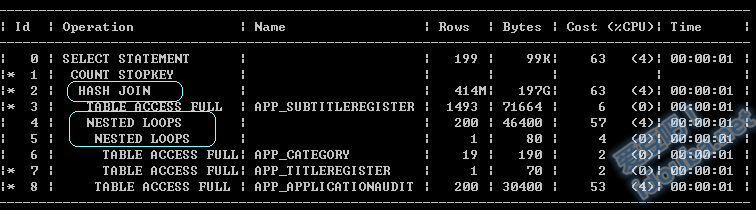
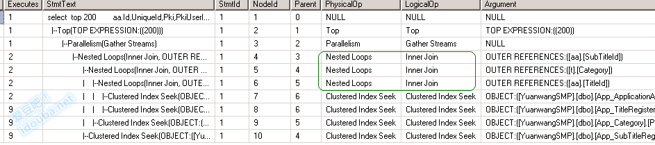
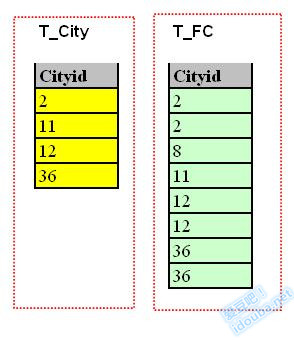
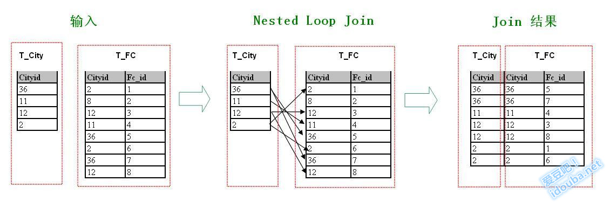
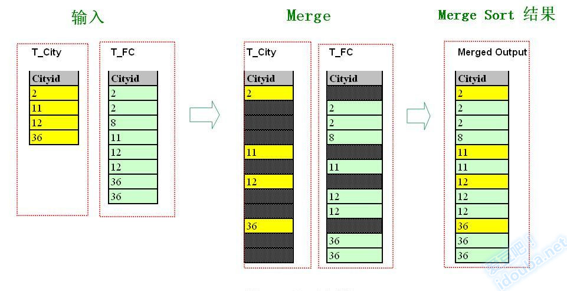
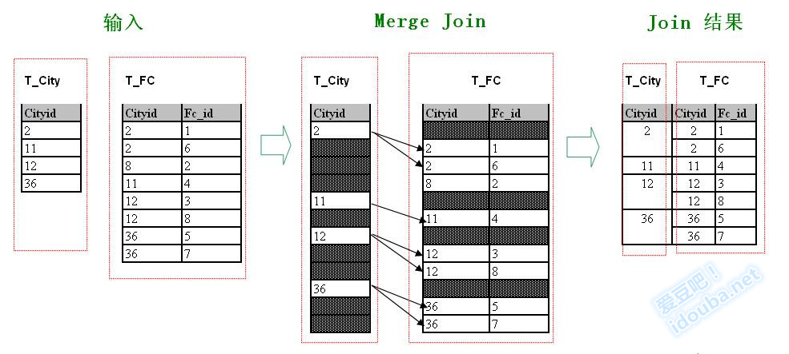
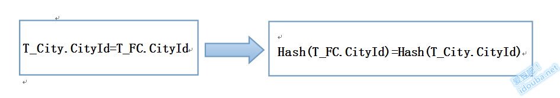
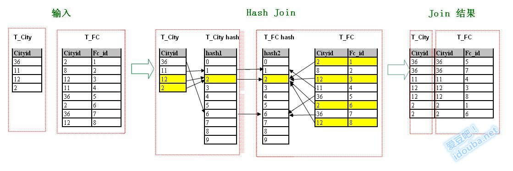

从Search Sort到Join
发表于《程序员》2015年4月B的一篇文章，在博客归档下。根据杂志社要求，在自己博客发表该文章亦须注明：本文为CSDN编译整理，未经允许不得转载，如需转载请联系market#csdn.net(#换成@)
想通过原理来说明一些技术白皮书上“什么时候应该使用什么”这个“应该”后面的原因。通过数据结构中经典的排序查找算法来推倒解释数据库中几种经典的表连接背后的算法原理，和原理决定的在各种数据库中不同的应用和限制。以简单的算法来讲出数据库系统中看着核心强大功能的本质的算法设计。较之白皮书中不同数据库的不同描述，尽量去除差异，通过原理来描述功能，做到深入浅出。
一、前言
Join的语义是把两张表的通过属性的关联条件值组合在一起，一般意义上数据库范式越高，表被拆分的越多，应用中要被Join的表可能会越多。在我们日常开发中几乎找不到不涉及Join的SQL语句，哪怕未显示包含Join这个关键字。在数据库系统执行时，都会选用一种明确最优的Join方式来执行。通过对Join原理的理解能帮助理解数据库的Join选择，进而更深刻的理解查询计划，理解同样的表结构数据行数变化、索引的变化为什么会影响数据库Join方式的选择，从而更针对性的做好性能优化。
如下图分别是oracle和mssql的执行计划，是涉及四个表的内连接。在查询计划中显示每一个步骤的表连接方式，从图中可以看到共有三个表连接操作(有意思的是，对于相似的数据集，两个数据库选择的连接方式不同)。

图表 1 Oracle执行计划
Join原理在数据库厂商的文档中和经典的《数据库系统概念》中分别从应用和理论的角度上描述的足够详细。本文尝试从另外一个视角，通过数据结构中最基础的查找排序算法(Search&Sort)来类推和归纳最常用的三种Join方式的原理：嵌套循环连接(Nested Loop Join)、排序归并连接 (Sorted Merge Join)、 哈希连接(Hash Join)。进而了解三种方式之间的联系、演变以及原理决定的其应用上的细微差别。说明这几种表连接方式是数据库的技术，但和数据库索引等其他数据库技术一样，也是是典型的数据结构的延伸。

图表 2 Mssql执行计划
二、实例数据
为了示意清楚，本文中用到的示例中的两个数据集比较简单。为如下两个表。
T_FC
| Fc_id | Fc_name | OfficialSite | CityId |
|---|---|---|---|
| 1 | Inter | www.inter.it | 2 |
| 2 | Barcelona | http://www.fcbarcelona.com/ | 8 |
| 3 | Manchester united | http://www.manutd.com | 12 |
| 4 | Liverpool | http://www.liverpoolfc.com/ | 11 |
| 5 | Arsenal | http://www.arsenal.com/ | 36 |
| 6 | ACM | http://www.acmilan.com/ | 2 |
| 7 | Chelsea | http://www.chelseafc.com/ | 36 |
| 8 | Manchester city | http://www.mcfc.co.uk/ | 12 |
图表 3 测试数据T_FC
T_City
| Fc_id*CityId* | Fc_name | Country | Desc |
|---|---|---|---|
| 36 | Landon | Britain | ? |
| 11 | Liverpool | Britain | ? |
| 12 | Manchester | Britain | |
| ?2 | Milan | Italy | ? |
图表 4 测试数据 T_City
第一个表是一个实体表，记录了几个Football Club的一般性描述。其中第一条记录是作者支持了17年的球队：位于Milan城的大国米！第二个表是一个城市信息的实体表，两个表通过CityId列关联，表示那个俱乐部位于那座城市。从示例数据中可以看到，不同的俱乐部可以有相同的CityId，这就是传说中的德比，最著名、最伟大、最火爆的，也是作者一直关注的米兰德比，还有最近几年才开始关注的曼彻斯特德比。
为了简单期间，以最简单的内连接中的等值连接条件举例。
SELECT T_FC.Fc_id, T_FC.Fc_name, T_FC.OfficialSite, T_FC.CityId, T_City.City_Name, T_City.Country
FROM T_FC , T_City
WHERE T_FC. CityId = T_City. CityId
数据准备好了，然后进入正文，看看如何从数据结构的Search Sort 归纳出Join。
三 、从查找排序算法看表连接原理分析
表连接主要考察的是连接列的关系，于是作为切入点，暂时忽略掉连接键之外的列，发现待连接的两个表变成了两个数组，讨论问题陡然看着清爽简单了很多。所谓的连接无非就是把这两个关联列中符合连接条件对应元素找出来配对即可。我们例子是一个等值条件，这个匹配条件转为查找的讨论就更直接了，即考察一个集合的元素，找出另外一个集合值其相等的元素。

图表 5 关联列看出来了吗？我们在试图偷换概念。用检索search来替换连接Join。是的，这是我们的切入点，后面会再绕回来的。检索，这在数据结构和算法中是多么经典的技术。后面讨论我们会发现数据库系统中“发明”的高大上的连接方式，其实也也是从对应的经典的检索算法推演而来。
-
嵌套循环连接Nested Loop Join
看着前面的这两组数字，不用太浪费脑细胞，最笨的办法，穷举呗，拿着一边的数据，一个一个拿出来，看看和隔壁的哪个对上眼。表现在算法实现上其实就是两重循环，循环体内就是一个匹配看是否满足连接条件，对于这个例子就是取值是否相等。即拿着一组中的数字，逐个另一组中去匹配，看是否有等值的元素存在。
假设我们先考虑T_City的数据，即外层循环是遍历T_City表的数据。则写成伪代码如下。
for each CityId in T_City do begin
for each tuple CityId in T_FC do begin
if T_City.CityId=T_FC.CityId
output(T_FC.CityId,T_City.CityId)
下图描述了这种连接方式的过程，从_T_City_中逐行选取记录，在_T_FC_的_CityId_列上按个查找符合连接条件_T_City.CityId=T_FC.CityId_的记录。找到则添上一个箭头表示建立连接(Join)，多么形象！从图中看到总共添加了7个箭头，对应Join结果集中的7个Join结果。

图表 6 嵌套循环连接示例 这就是检索中对于没有规则的数据集的最笨的检索办法。恭喜你，你上面写的这段最笨的检索伪代码正是数据库系统中嵌套循环连接(Nested Loop Join)的主要思路。术语上，外围循环的数据集_T_City_被称为外部表(Outer Table)，又称驱动表(Driving Table)；内部循环的表_T_FC_称为内部表(Inner Table)。实现中扫描外部表的每一行，对每一行数据，扫描内部表中满足Join条件的记录，将其作为输出结果集。最终的结果集是每次外部扫描的结果集并在一起。因为要通过两重循环对两组中的每一个数据进行比较，以判断是否满足Join条件，很容易发现这种方法是开销是相对比较昂贵的。
对于Nested Loop Join，Oracle、Mysql、Mssql几乎所有的关系数据库都支持。虽然实现上细节上稍微有不同。思路都一样。
根据这个原理我们不难分析到最好外部表即驱动表不能太大。如果是两张表比较大，尤其是Outer Table比较大的情况，Inner Table会被扫描很多次，这时候的算法复杂度增加得非常快，总的资源消耗量也会增加得很快。同时，如果Inner Table在Join条件上有索引，则每次内循环的效率会很高，Inner表数据集大也没有关系，不用挨个扫描Inner表就可以定位到匹配的行。
-
排序归并连接(Sort Merge Join)
那有没有比整个列表扫描更高效的方法呢？当然还是按照检索的思路。对于一个没有规则的数据集只能全部扫描，检索的时间复杂度是O(n)，而如果记录集是排好序的，查找会变得简单。
结合上面的例子，如果把两组数都排好序，那么Join会是什么样子？马上脑海里浮现出了如下场景：把一个有序集合插入到另外一个有序集合的对应位置，使得最终的集合也保持有序，即把两个有序集合合并成一个有序集合。如图，把左边T_City表中黄色的记录和右边T_FC中绿色的记录合并在一起。

图表 7 归并排序示例 这个不正是经典的归并排序吗？没错，就是归并！假设两个集合都是从小到大排序的，归并排序的主要思路是：在输入的有序集合设定两个指针，起始位置分别为两个已经排序序列的起始位置，比较两个指针指向元素，选择相对小的元素放入输出的合并空间，并移动指针到下一个位置，直到一个集合为空，把另外一个集合的剩余元素一下全部放到输出的合并空间。哪怕不仔细了解内部逻辑，只是看循环，就能发现和嵌套循环连接最大的区别是循环只有一层了。因为不用对两个集合的每两个元素都要进行比较。那时间复杂度就一定降低了一个级别。上面归并排序示例图经过小的改动，就会成下图。输入是一样的，两个有序集合。中间的merge过程也类似，不同的是，没有把一个有序集合的元素对应插入到另外一个有序集合中，而只是按顺序在两个有序集合中相等的元素间建立联系。

图表 8 排序归并连接示例参照连接条件T_City.CityId=T_FC.CityId，根据左边T_City表上CityId上列的取值，挨个在右边的T_FC上查找，和嵌套循环连接的示例图一样，结果也是添加了满足条件的7个箭头，并且也同样得到了7个Join结果，但是箭头的分布还是有挺大差别。在Sort Merge Join中的箭头是没有交叉的，而Nested Loop Join中箭头交叉很多。这个简单的特征其实反应了两种方法的原理上的差别。以T_City中CitypId=2的行发起的箭头为例，在第Sort Merge Join中，因为右边行集是排序的，因此是扫描了前两行的两个匹配记录后，碰到第一个不匹配的第三行，则结束扫描；而在Nested Loop Join中，右边的行集是没有顺序的，要找到符合连接条件的，必须对右边行集进行完整扫描。
观察到Outer Table中的连接的键值每次和Inner Table 的连接键值比较时，都不用从第一个元素开始，也不必一直扫描到最后一个元素。因此时间复杂度也会比Nested Loop Join降低。
根据这个原理很容易发现使用排序归并连接可以获得比较高的连接效率。但是所谓没有免费的午餐，使用排序归并连接需要待连接的两个集合在连接列上是排好序的。我们知道对于大的数据集排序代价一般是不小的，因此优化器在选择是否采用排序归并连接还要参考其他条件。如果输入的集合本身是在有序的(如在Join条件的列上有B树索引)，或者SQL语义中有order by要求，在连接列上本来就是要求排序的，则优化器可能会考虑选择排序归并连接。一般对于大的集合如果不能采用排序归并连接，则另外一种连接方式Hash连接会被考虑。
-
哈希连接(Hash Join)
还是从查找算法思路来考虑。查找算法中有一个通过构建一点额外空间而换取O(1)的时间复杂度的检索方法，那就是hash查找。将该算法思路类推到数据库中，就是大名鼎鼎且功能强大的哈希连接。Hash查找中通过一个Hash函数，对待查找的元素集合进行分组，使得元素的存储位置和元素值之间有一定联系。则对于要查找的元素，只要计算其Hash值得到存储位置，直接访问即可(Hash函数的选择不好引起的过多的Hash冲突，造成计算得到的存储位置定位精准度不够在此不作讨论)。
在Hash Join中，同样使用一个合适的Hash函数对两个行集上的Join条件列分别进行分组，在匹配中只要比较两边相同分组内的记录即可。不用像嵌套循环连接一样，挨个比较两个集合中每两个元素。其实也可以认为，嵌套循环连接就是Hash Join中只有一个分组的情况。如果Hash函数选择越好，分的组越均匀，则Hash冲突越少，分组就越有效，性能也越好。
在示例中使用最简单的哈希函数_Hash(n)=n%10_将两个输入行集的Join条件列CityId分为10个组。由Hash函数的定义可以知道，Join条件满足如下推导：

因此在图中左边和右边Hash后partiton的对应记录的箭头是水平的。如图标黄的部分中12和2均落入partition2，则Join时左边标黄的partition2中的记录只用考察和右边partition2中的记录建立连接即可。

图表 10 哈希连接示例在数据库系统实现中，Hash Join方式一般通过一个输入集来构造Hash Table，扫描另外一个输入集，对其中的每个元素通过Hash查找的方式快速定位到Hash Table的对应位置，即找了满足连接条件的记录。如示例中，根据_T_City_表中的_CityId_建立Hash Table。对_T_FC_中的_CityId_使用同一个Hash函数，计算得到Hash值，定位到Hash Table的元素位置，只需在该位置中查找匹配的元素建立连接即可。这种方式和上面的描述的对两个数据集都采用同样的Hash函数进行分组，然后组内检查匹配逻辑上是一个意思。
通过分析Hash Join的原理，我们可以分析出如果用于两个数据集差别比较大的时候，如果小的数据集能加载到内存构造Hash Table，然后从磁盘上扫描另外一个较大的数据集，对大数据集中的Join列计算Hash值得到内存Hash Table的Index，然后建立连接。这样性能会非常高，这时真正的物理IO的花销就只有造Hash Table时对小数据集的扫描和匹配时对大数据集进行的扫描。当然，很容易看出Hash Join的一个天然限制，那就是连接条件必须是等值条件，因为Hash Join的机制需要计算Hash值得到Hash Table的位置，来建立连接。但是Hash Join不需要数据集事先按照什么顺序排序，也不要求上面有索引。
四、总结
本文尝试以数据结构中最基础的查找排序算法为切入点来归纳三种经典排序算法在实现原理上的联系和差别。比较有意思的是，最简单的办法不是看作者啰啰嗦嗦的描述，而是分别观察几张Join示意图中连接箭头的特征，同样的两个数据集做连接，都是T_City在左T_FC在右，因此箭头的方向都是从左指向右。但是箭头的特征还是有差别：嵌套循环连接(Nested Loop Join)的箭头是偏上或者偏下各种方向都有，且是彼此交叉的；排序归并连接(Sort Merge Join)的箭头是虽然也是偏上偏下方向都有，但彼此没有交叉；而哈希连接(Hash Join)的箭头最具有特征，所有箭头都是水平的。
以上仅仅是在逻辑数据集上比较纯粹的分析数据库系统中三种连接方式的原理。实际情况要复杂的多，并不存在这样一种方法，比其他的方法高明高效。数据库的查询优化器在选择一个连接方式时会结合操作对象的数据统计情况，查询语句的要求，选择一个合适的连接方式。另外支持一种以上Join方式的数据库系统(如oracle和mssql)中都支持Join hint使得用户可以要求优化器在使用指定的连接方式覆盖优化器自己选择的Join方式。一般还是认为优化器足够聪明，不使用Join Hint。
最后，基于之上的原理分析在下表中对三种连接方式在使用场景等几个细节方面做个更全面的比较和归纳：
| 嵌套循环连接(Nested Loop Join) | 排序归并连接(Sort Merge Join) | 哈希连接(Hash Join) | |
|---|---|---|---|
| 支持的常用数据库 | oracle, mssql,mysql | oracle, mssql | oracle, mssql |
| 适用场景 | 两个较小的数据集，Inner table Join列上有索引 | 较大数据集，Join字段上有索引，或者语句要求结果集被排序。 | 大数据集，Join字段上没有索引也不要求排序 |
| 连接字段表达式 | 任何表达式 | <、?<=、?>、?>=;不包括?<> | 仅用于等价连接 |
| 数据集排序特征 | 不要求 | 要求 | 不要求 |
| 内存资源要求 | 要求较少 | 当需要对数据集排序时，内存要求较高。 | 高 |
| 返回第一次查询结果 | 当索引选择性比较高或限制条件比较多时能较快返回第一次查询结果。 | 必须在得到全部结果后才能返回数据。 | 因为要在内存中简历哈希表，第一次返回结果较慢。 |